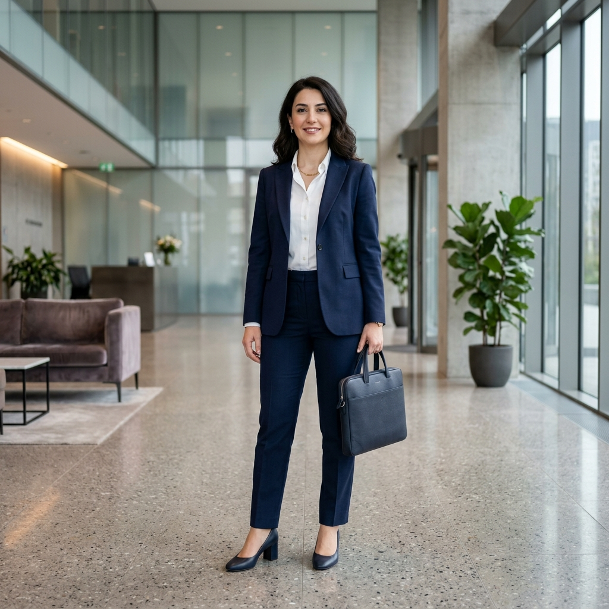
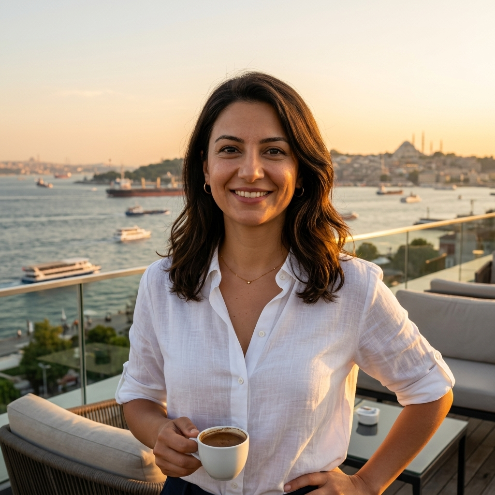

Profesyonel Özet
10 yılı aşkın SAP danışmanlık deneyimi ile kurumsal dönüşüm süreçlerine liderlik eden Ayşe Kaya, analitik zekası ve güven veren sunum tarzıyla "Kadro" ekibinin kıdemli teknoloji yüzüdür. Türkiye'deki SAP ekosisteminde özellikle S/4HANA geçiş süreçleri ve lokalizasyon konularında otorite kabul edilir.
İş Deneyimi
Lead SAP Consultant
SAP Danışmanlık A.Ş. • 2020 - Günümüz
Türkiye'nin en büyük enerji ve üretim şirketlerinin dijital dönüşüm projelerinde mimari liderlik.
YouTube İçerik Üreticisi
SAP Akademi Serisi • 2021 - Günümüz
Haftalık teknik rehberler ve sektör analizleri ile 50.000+ profesyonel takipçiye hitap eden eğitim serisi.
Uzmanlık Alanları
SAP S/4HANA Architecture
Finance & Logistics Modules
Change Management
Digital Storytelling
Strategic Planning
Technical Mentorship
Tam Boy Profil

Sosyal Medya / Yaşam Tarzı
